MLLM-CompBench: A Comparative Reasoning Benchmark for Multimodal LLMs
The ability to compare objects, scenes, or situations is crucial for effective decision-making and problem-solving in everyday life. For instance, comparing the freshness of apples enables better choices during grocery shopping, while comparing sofa designs helps optimize the aesthetics of our living space. Despite its significance, the comparative capability is largely unexplored in artificial general intelligence (AGI). In this paper, we introduce MLLM-CompBench, a benchmark designed to evaluate the comparative reasoning capability of multimodal large language models (MLLMs). MLLM-CompBench mines and pairs images through visually oriented questions covering eight dimensions of relative comparison: visual attribute, existence, state, emotion, temporality, spatiality, quantity, and quality. We curate a collection of around K image pairs using metadata from diverse vision datasets and CLIP similarity scores. These image pairs span a broad array of visual domains, including animals, fashion, sports, and both outdoor and indoor scenes. The questions are carefully crafted to discern relative characteristics between two images and are labeled by human annotators for accuracy and relevance. We use MLLM-CompBench to evaluate recent MLLMs, including GPT-4V(ision), Gemini-Pro, and LLaVA-1.6. Our results reveal notable shortcomings in their comparative abilities. We believe MLLM-CompBench not only sheds light on these limitations but also establishes a solid foundation for future enhancements in the comparative capability of MLLMs.
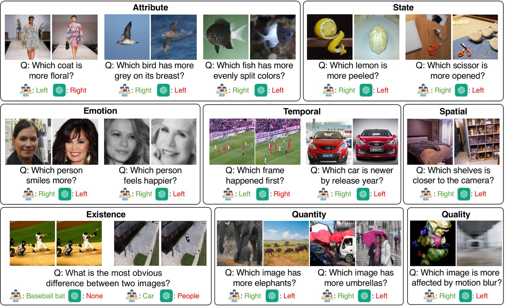
图 1：MLLM-CompBench 提供多样的三元组，每个三元组包含两张图像、一个关于二者相对性的问题以及一个答案，覆盖八类相对性（见 §1）。图中给出若干示例以及 GPT-4V [1] 的预测。
The concept of “relativity” is integral in our daily lives. For example, relative freshness affects our decision to purchase fruits; relative spaciousness affects our decision to choose living or working space; relative crowdedness indicates which paths to select; (relative) change between two scenes reveals what happened to the environment. In short, the ability to compare objects, scenes, or situations and reason about their relativity is vital for us to make informed decisions, solve problems effectively, and acquire knowledge efficiently, enabling us to make sense of the surrounding world.
「相对性」这一概念在我们的日常生活中不可或缺。例如，相对新鲜度影响我们购买水果的决定；相对宽敞程度影响我们选择居住或工作空间的决定；相对拥挤程度指示该选哪条路径；两个场景之间的（相对）变化则揭示环境发生了什么。简而言之，比较物体、场景或情境并就其相对性进行推理的能力，对我们做出有依据的决定、有效解决问题与高效获取知识至关重要，它使我们能够理解周围的世界。
The recent advance of multimodal large language models (MLLMs), a.k.a. large multimodal models (LMMs), [1, 3, 58, 33, 32, 14, 6] has demonstrated promising progress toward artificial general intelligence (AGI) [65, 36] and achieved unprecedented results in a variety of vision and language (V&L) tasks, ranging from free-formed visual recognition [15, 10, 13] and visual captioning [10, 2] to visual question answering [21, 22, 53]. Yet, much less attention has been paid to tasks that involve relativity and comparison between multiple visual inputs, e.g., two images. In essence, most of the existing datasets for visual recognition [15, 10, 13] and V&L tasks [21, 2, 40, 31, 16, 65] comprise examples with only single visual inputs (e.g., an image or a video clip), making them infeasible to assess MLLMs’ comparative capability.
多模态大语言模型（MLLM，亦称大型多模态模型，LMM）[1, 3, 58, 33, 32, 14, 6] 的近期进展展示了迈向通用人工智能（AGI）[65, 36] 的可喜势头，并在从自由形式的视觉识别 [15, 10, 13]、图像描述 [10, 2] 到视觉问答 [21, 22, 53] 等一系列视觉与语言（V&L）任务上取得了前所未有的结果。然而，涉及多个视觉输入（例如两张图像）之间相对性与比较的任务所受到的关注要少得多。究其本质，多数现有的视觉识别 [15, 10, 13] 与 V&L 任务 [21, 2, 40, 31, 16, 65] 数据集只包含单一视觉输入（如一张图像或一段视频片段）的样例，因此无法用于评估 MLLM 的比较能力。
In this paper, we introduce MLLM-CompBench, a V&L benchmark dedicated to evaluating the comparative reasoning capabilities of MLLMs (Figure 1). MLLM-CompBench comprises K triplets, each containing 1) a pair of visually or semantically relevant images 2) a question about their relativity, and 3) a ground-truth answer. We consider a wide range of questions categorized into eight aspects of relativity. Attribute Relativity tests the ability to recognize relative attributes [44] such as size, color, texture, shape, and pattern. For instance, given two images of birds, we ask MLLMs to compare the length of their beaks (e.g., “Which bird has longer beaks?”). Existential Relativity assesses the comprehension of existence in comparisons, asking questions like “Which trait is in the left butterfly but not in the right butterfly?”. State/Emotion Relativity examines if MLLMs can identify state variations, such as different degrees of baking and smiling. Temporal Relativity evaluates the understanding of time-related changes between two objects or scenes (e.g., “Which video frame happens earlier during a free kick?”). Spatial Relativity checks the ability to tell spatial differences (e.g., “Which cup looks further?”). Finally, Quantitiy/Quality Relativity investigates whether an MLLM understands the relativity of quantity and quality (e.g., “Which image contains more animal instances?”).
本文提出 MLLM-CompBench，一个专门用于评估 MLLM 比较推理能力的 V&L 基准（图 1）。MLLM-CompBench 包含 K 个三元组，每个三元组包含：1）一对视觉或语义上相关的图像；2）一个关于二者相对性的问题；3）一个真值答案。我们考虑范围广泛的问题，把它们归为相对性的八个方面。属性相对性检验模型识别相对属性 [44]（如尺寸、颜色、纹理、形状与图案）的能力。例如，给定两张鸟的图像，我们要求 MLLM 比较其喙的长度（如「哪只鸟的喙更长？」）。存在性相对性评估模型在比较中对存在的理解，提出诸如「哪种特征出现在左边的蝴蝶而不出现在右边的蝴蝶？」的问题。状态／情绪相对性考察 MLLM 能否识别状态变化，例如烘焙程度与微笑程度的差异。时间相对性评估模型对两个物体或场景之间时间相关变化的理解（如「在任意球过程中哪一帧发生得更早？」）。空间相对性检验模型分辨空间差异的能力（如「哪个杯子看起来更远？」）。最后，数量／质量相对性考察 MLLM 是否理解数量与质量的相对关系（如「哪张图像包含更多动物实例？」）。
We systematically benchmark representative MLLMs on MLLM-CompBench, including GPT-4V [1], Gemini1.0-Pro [58], LLaVA-1.6 [33], and VILA-1.5 [32]. Specifically, we concatenate two images horizontally (i.e., left and right) as the visual input. We then prompt MLLMs to answer questions about the relativity between these two images. When applicable, we also investigate a two-stage reasoning strategy, starting by asking a refined question about each image independently (e.g., “How many animal instances are in the image?”), followed by a pure language question (e.g., “Based on the descriptions, which image has more animal instances?”). Our results reveal notable shortcomings in existing MLLMs’ comparative abilities, especially in Existence, Spatiality, and Quantity Relativity. We conduct further analyses of error cases, offering insights for future MLLMs’ improvements.
我们在 MLLM-CompBench 上系统评测了若干代表性 MLLM，包括 GPT-4V [1]、Gemini1.0-Pro [58]、LLaVA-1.6 [33] 与 VILA-1.5 [32]。具体而言，我们把两张图像横向拼接（即左与右）作为视觉输入，再提示 MLLM 回答关于这两张图像相对性的问题。在适用情形下，我们还考察一种两阶段推理策略：先就每张图像独立提出一个细化的问题（如「图像中有多少个动物实例？」），随后提出一个纯语言问题（如「根据描述，哪张图像的动物实例更多？」）。我们的结果揭示了现有 MLLM 在比较能力上的明显不足，尤其在存在性、空间性与数量相对性上。我们进一步分析了错误样例，为未来 MLLM 的改进提供了启示。
In sum, MLLM-CompBench has several advantages: (i) MLLM-CompBench introduces new perspectives to evaluate MLLMs — comparative reasoning capabilities about relativity. (ii) MLLM-CompBench provides extensive coverage across eight relativities and fourteen domains. (iii) MLLM-CompBench benchmarks recent MLLMs, accompanied by detailed analyses and insights for future improvement. (iv) MLLM-CompBench is extensible — we identify multiple data sources that can be further incorporated. Remark. During the conference, we found a concurrent work by Kazemi et al. [28] that also studies MLLM’s reasoning capability with multiple images, specifically focusing on math, physics, logic, code, table/chart understanding, spatial and temporal domains. We encourage readers to consult their work as well.
总的来说，MLLM-CompBench 具有以下几方面优势：（i）它为评估 MLLM 引入了新的视角——关于相对性的比较推理能力。（ii）它覆盖八类相对性与十四个领域，覆盖面广。（iii）它评测了近期的 MLLM，并配有细致的分析与面向未来改进的洞见。（iv）它具有可扩展性——我们识别出多个可进一步纳入的数据源。附注。在会议期间，我们发现 Kazemi 等 [28] 的一项同期工作同样研究 MLLM 在多图像下的推理能力，其重点是数学、物理、逻辑、代码、表格／图表理解以及时空领域。我们也建议读者参阅他们的工作。
Multimodal LLMs (MLLMs). Large Language Models (LLMs) [1, 58, 4, 5, 23, 59, 63] have made significant strides in various NLP and AI tasks. Many recent works [1, 3, 58, 33, 32, 14, 6, 29, 69, 45, 61] have extended LLMs’ capabilities into the multimodal domain, particularly for vision and language (V&L) tasks. At a higher level, this advancement involves integrating a pre-trained vision encoder (e.g., CLIP [49]) with LLMs via a bridge module (e.g., an adaptor [33, 14]). Different strategies are developed to pre-train these multimodal LLMs (MLLMs), such as optimizing the LLMs and bridge module while keeping the vision encoder frozen [33] or training the bridge part only [14].
多模态大语言模型（MLLM）。大型语言模型（LLM）[1, 58, 4, 5, 23, 59, 63] 在各类 NLP 与 AI 任务上取得了长足进展。许多近期工作 [1, 3, 58, 33, 32, 14, 6, 29, 69, 45, 61] 把 LLM 的能力扩展到多模态领域，尤其是视觉与语言（V&L）任务。在较高层面上，这一进展涉及通过桥接模块（如适配器 [33, 14]）把预训练视觉编码器（如 CLIP [49]）与 LLM 集成起来。人们发展了不同的策略来预训练这些多模态大语言模型（MLLM），例如在保持视觉编码器冻结的同时优化 LLM 与桥接模块 [33]，或只训练桥接部分 [14]。
MLLM benchmarks. Earlier, MLLMs were evaluated on traditional V&L tasks, such as visual question answering (VQA) [21, 22, 53], image captioning [10, 2], and image-text retreival [31, 11]. Recently, a range of new and intriguing V&L tasks [37, 56] have emerged to assess MLLMs’ capabilities across various dimensions. These include comprehension and reasoning about charts [38], diagrams [39], scene text [54, 40], web navigation [16], expert-level multimodal understanding [65], etc. Our MLLM-CompBench complements these efforts by focusing on a new dimension, MLLMs’ comparative reasoning capacity on a pair of visually or semantically relevant images.
MLLM 基准。早期，MLLM 在传统 V&L 任务上被评测，如视觉问答（VQA）[21, 22, 53]、图像描述 [10, 2] 与图文检索 [31, 11]。近来出现了一系列新颖的 V&L 任务 [37, 56]，用于从多个维度考察 MLLM 的能力，包括对图表 [38]、示意图 [39]、场景文字 [54, 40]、网页导航 [16]、专家级多模态理解 [65] 等的理解与推理。我们的 MLLM-CompBench 对这些工作形成补充，聚焦于一个新的维度：MLLM 在一对视觉或语义相关图像上的比较推理能力。
Multi-image datasets. Several existing datasets [44, 57, 17, 25, 67, 27] provide multi-image data (e.g., pairs of images), but they serve different purposes (e.g., not for evaluating MLLMs) or have relatively limited scopes. NLVR2 [57] labels each image pair with a caption that may or may not be relevant to the images, asking models to predict the caption’s relevance (i.e., image-text matching). A few datasets [27, 7, 66] synthesize multi-image data for instruction tuning (e.g., image editing). More relevant to ours are [17, 25, 67, 44]. Birds-to-Words [17] aims to describe the difference between two birds; Sopt-the-diff [25] focuses on the difference between two outdoor scenes; Q-bench2 [67] compares the quality (e.g., blurriness) between two images; Relative Attributes [44] compares the relativeness of attributes between two facial or natural images. However, these datasets have limited scopes, only targeting specific domains or questions. In contrast, our MLLM-CompBench defines eight relative comparisons, covering a wide range of relativities in the real world. Our image pairs are curated from fourteen diverse visual domains. We believe this offers the V&L community a more comprehensive benchmark to assess the comparative capabilities of current leading MLLMs.
多图像数据集。若干现有数据集 [44, 57, 17, 25, 67, 27] 提供多图像数据（如成对图像），但它们服务于不同目的（例如并非用于评估 MLLM），或范围相对有限。NLVR2 [57] 为每个图像对配一句可能与图像相关也可能不相关的描述，要求模型预测该描述是否相关（即图文匹配）。少数数据集 [27, 7, 66] 为指令微调（如图像编辑）合成多图像数据。与本文更相关的是 [17, 25, 67, 44]。Birds-to-Words [17] 旨在描述两只鸟之间的差异；Spot-the-diff [25] 关注两个户外场景的差异；Q-bench2 [67] 比较两张图像的质量（如模糊程度）；Relative Attributes [44] 比较两张人脸或自然图像之间属性的相对程度。然而这些数据集范围有限，只针对特定领域或问题。相比之下，我们的 MLLM-CompBench 定义了八种相对比较，覆盖现实世界中广泛的相对性，图像对则取自十四个多样的视觉领域。我们相信这为 V&L 社区提供了一个更全面的基准，用于评估当前领先 MLLM 的比较能力。
Learning to rank & learning with preference. Several research topics are relevant to ours and may benefit from our MLLM-CompBench. Learning to rank (LTR) [30, 34, 8] aims to realize a scoring function that can rank examples (e.g., images) based on certain aspects, such as facial ages [41, 9] and degrees of attributes’ presence [44]. Typically, an LTR model takes one example as input; the model is trained with pairs of examples such that the output scores match the ground-truth orders. Recently, learning with preference information [18] has become a mainstream approach to fine-tuning LLMs for alignment [50, 12]. Unlike our focus, these works usually collect pairs of outputs (e.g., answers to a question) with humans’ preferences to supervise model fine-tuning.
排序学习与基于偏好的学习。若干研究主题与我们相关，也可能从 MLLM-CompBench 中获益。排序学习（LTR）[30, 34, 8] 旨在实现一个打分函数，能按某些方面（如面部年龄 [41, 9]、属性存在程度 [44]）对样例（如图像）排序。典型的 LTR 模型以单个样例为输入，用成对的样例训练，使输出分数与真值次序匹配。近来，基于偏好信息的学习 [18] 已成为微调 LLM 以实现对齐的主流方法 [50, 12]。与我们的关注点不同，这些工作通常收集成对的输出（如对某个问题的回答）并附带人类偏好，用以监督模型微调。
To date, most of the existing visual recognition and V&L benchmarks focus on a single visual input (e.g., an image or a video clip), aiming to assess and promote absolute inference and reasoning within it, for example, identifying objects, recognizing their properties/states/actions, and describing and reasoning about their interactions within in the scene.
迄今为止，多数现有的视觉识别与 V&L 基准聚焦于单一视觉输入（如一张图像或一段视频片段），旨在评估并促进其中的绝对推断与推理，例如识别物体、辨认其属性／状态／动作，以及描述并推理场景内物体之间的交互。
In reality, not all the inference and reasoning could be made absolute, or need to be absolute. For example, it is hard and ambiguous to describe the absolute degree of smiling [44], but it is relatively easy to compare two faces and tell which one smiles more. This fact applies to other visual properties like attributes (e.g., length), states (e.g., steps in cooking), and spatial locations (e.g., longitude and latitude). Often, comprehending the relativity is sufficient for us to make sense of the real world.
在现实中，并非所有推断与推理都能被绝对化，或都需要被绝对化。例如，描述微笑的绝对程度既困难又含糊 [44]，但比较两张脸并判断哪一张笑得更多则相对容易。这一事实同样适用于其他视觉属性，如属性（例如长度）、状态（例如烹饪的步骤）与空间位置（例如经纬度）。通常，理解相对性已足以让我们认识现实世界。
Furthermore, learning to infer and reason about relativity could naturally and more efficiently facilitate AI models to grasp fine-grained details. For instance, learning to describe a complex scene (e.g., captioning) often results in a model mastering common objects and properties but missing rare and subtle ones. In contrast, learning to tell the difference between two scenes promotes the model to identify subtle changes and describe them.
此外，学习对相对性做推断与推理，能够自然且更高效地帮助 AI 模型掌握细粒度细节。例如，学习描述一个复杂场景（如图像描述）往往使模型掌握常见物体与属性，却遗漏罕见而细微的部分。相比之下，学习分辨两个场景之间的差异会促使模型识别并描述细微变化。
Last but not least, the ability to perform comparative reasoning is integral to our daily decision-making and problem-solving (see §1 for some examples). Humans’ comparative capability, e.g., providing preferences between instances, has also been widely leveraged to supervise foundation models like LLMs to align their outputs with application requirements and societal expectations [50, 12]. We thus believe it is crucial to assess and promote comparative reasoning about relativity in AGI.
最后同样重要的是，进行比较推理的能力对我们的日常决策与问题解决不可或缺（部分示例见 §1）。人类的比较能力——例如在实例之间给出偏好——也已被广泛用于监督 LLM 等基础模型，使其输出符合应用需求与社会期望 [50, 12]。因此我们认为，在 AGI 中评估并推进关于相对性的比较推理至关重要。
We introduce MLLM-CompBench, a multimodal benchmark designed to assess the comparative reasoning abilities of MLLMs across various dimensions. In what follows, we first describe the types of comparative capabilities that MLLM-CompBench aims to evaluate (§4.1). Next, we outline our methodology for collecting images, followed by how we annotate associated questions and answers to evaluate these capabilities (§4.2). Lastly, we provide detailed statistics on MLLM-CompBench and discuss its data quality (§4.3). Figure 2 illustrates the overall pipeline used to develop MLLM-CompBench.
我们提出 MLLM-CompBench，一个用于从多个维度评估 MLLM 比较推理能力的多模态基准。下文首先描述 MLLM-CompBench 旨在评估的比较能力类型（§4.1）；接着概述我们的图像采集方法，以及如何标注配套的问题与答案来评估这些能力（§4.2）；最后给出 MLLM-CompBench 的详细统计并讨论其数据质量（§4.3）。图 2 展示了构建 MLLM-CompBench 的整体流程。
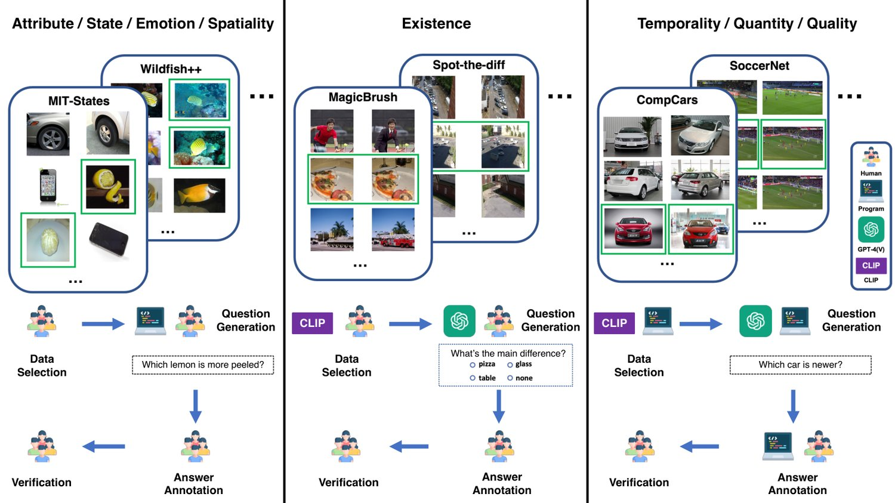
图 2：MLLM-CompBench 的构建流程，包括数据筛选、问题生成、答案标注与验证。我们结合人力、计算机程序、MLLM（具体为 GPT-4V [1]）与 CLIP 相似度 [49]，依据相对性类型与可用元数据来筛选图像并生成问题。
Building upon §3, we consider eight comparison categories to evaluate MLLMs’ abilities to discern differences between two similar images (Figure 1).
在 §3 的基础上，我们考虑八个比较类别，以评估 MLLM 辨别两张相似图像之间差异的能力（图 1）。
(1) Visual Attribute focuses on five common visual properties — Size, Color, Texture, Shape, and Pattern — and tests whether the model can identify the relative magnitude of these attributes between images. (2) Existence assesses the model’s capacity to identify fine-grained variations by detecting subtle changes between images. (3) State involves comparing the conditions or status of objects. (4) Emotion assesses the model’s capability to interpret degrees of human emotions. (5) Temporality and (6) Spatiality evaluate the model’s ability to recognize differences in images caused by temporal or spatial differences. These categories require both commonsense and comprehension of the physical world. Lastly, (7) Quantity measures the relative counting skills, and (8) Quality compares the quality of two images, examining the model’s low-level visual perceptual skills.
（1）视觉属性关注五种常见视觉性质——尺寸、颜色、纹理、形状与图案——检验模型能否识别图像之间这些属性的相对程度。（2）存在性评估模型通过检测图像间细微变化来识别细粒度差异的能力。（3）状态涉及比较物体的状况或状态。（4）情绪评估模型解读人类情绪程度的能力。（5）时间性与（6）空间性评估模型识别由时间或空间差异造成的图像差异的能力，这两类既需要常识，也需要对物理世界的理解。最后，（7）数量衡量相对的计数能力，（8）质量比较两张图像的质量，考察模型的低层视觉感知能力。
One major challenge in constructing MLLM-CompBench is mining image pairs that reflect the aforementioned relativities. Fortunately, many publicly accessible datasets in vision and V&L offer detailed annotations and metadata. We carefully investigate these datasets and identify a seed set of fourteen datasets that align with the eight relativity types (§4.1), covering a wide range of domains like open-domain, fashion, animal, sports, automotive, facial, and both outdoor and indoor scenes (cf. Right in Table 1). Below, we outline the datasets for each relativity type and the process for generating triplets of image pairs, a question, and an answer. Please see the supplementary material for details.
构建 MLLM-CompBench 的一个主要挑战，是挖掘出能体现上述相对性的图像对。所幸视觉与 V&L 领域中许多公开数据集提供了细致的标注与元数据。我们仔细调研了这些数据集，识别出十四个与八种相对性类型（§4.1）相匹配的数据集种子集合，覆盖开放域、时尚、动物、体育、汽车、人脸以及户外与室内场景等广泛领域（参见表 1 右侧）。下面按相对性类型概述所用数据集，以及生成「图像对—问题—答案」三元组的流程。细节见补充材料。
Data collection. We consider five visual attribute datasets. MIT-States [24] includes 245 objects with 115 visual attributes, from online sources such as food or device websites. Fashionpedia [26] is tailored to clothing and accessories and contains 27 types of apparel along with 294 detailed attributes. VAW [47], similar to MIT-States, offers a large-scale collection of 620 unique attributes, including color, shape, and texture. CUB-200-2011 [60] and Wildfish++ [47] specifically provide attributes for birds and fish. The former catalogs 15 bird parts and their attributes (e.g., “notched tail”); the latter details 22 characteristics (e.g., “yellow pelvic fins”) of various fish species. For each dataset, we cluster images by objects or parts with the same attributes (e.g., “round table”, “asymmetrical blouse”, “curved bill”, “yellow dorsal fin”) and extract visually similar image pairs from each group.
数据采集。我们考虑五个视觉属性数据集。MIT-States [24] 包含 245 个物体与 115 种视觉属性，素材来自食品或设备网站等在线来源。Fashionpedia [26] 面向服装与配饰，包含 27 类服饰与 294 项细致属性。VAW [47] 与 MIT-States 类似，提供 620 种独特属性的大规模集合，包括颜色、形状与纹理。CUB-200-2011 [60] 与 Wildfish++ [47] 分别专门提供鸟类与鱼类的属性：前者编录了 15 个鸟类部位及其属性（如「凹尾」）；后者详述了各种鱼类的 22 项特征（如「黄色腹鳍」）。对于每个数据集，我们按具有相同属性的物体或部位（如「圆桌」「不对称上衣」「弯曲的喙」「黄色背鳍」）对图像聚类，并从每组中抽取视觉上相似的图像对。
Annotation. We apply rule-based approaches to generate questions about relative degrees of attributes between objects (e.g., “Which coat is more floral?”). We then pair the questions with the corresponding image pairs and present them to six human annotators. The annotators are tasked with labeling the correct answers (binary: left/right) and filtering out any irrelevant or nonsensical questions about the images. In total, we construct a collection of 5.3K triplets.
标注。我们采用基于规则的方法生成关于物体间属性相对程度的问题（如「哪件外套更花？」）。随后把问题与相应的图像对配对，呈现给六位人类标注者。标注者负责标注正确答案（二值：左／右），并过滤掉与图像无关或语义不通的问题。我们共构建了 5.3K 个三元组。
Data collection. We consider datasets for image editing, which provide image pairs with similar layouts but subtle changes. We adopt MagicBrush [66], a recently released dataset for instruction-guided editing. It consists of (source image, instruction, target image) triplets, where the instruction specifies a subtle change between the source and target images. We also consider Spot-the-diff [25], which provides image pairs in outdoor scenes, along with descriptions of their differences.
数据采集。我们考虑面向图像编辑的数据集，它们提供布局相似但有细微变化的图像对。我们采用 MagicBrush [66]，一个近期发布的指令引导编辑数据集。它由（源图像，指令，目标图像）三元组构成，其中指令指定了源图像与目标图像之间的细微变化。我们还考虑 Spot-the-diff [25]，它提供户外场景的图像对及其差异描述。
Annotation. We curate multiple-choice questions to ease automatic evaluation. We prompt GPT-4V [1] with in-context learning to generate questions; the options are formed by the extracted objects and their attributes from images. We then pass the questions (along with image pairs) to the annotators to verify the options and label the correct ones. In total, we curate 2.2K triplets.
标注。我们编排多项选择题以方便自动评测。我们用上下文学习提示 GPT-4V [1] 生成问题；选项由从图像中抽取的物体及其属性构成。随后我们把问题（连同图像对）交给标注者，核验选项并标注正确项。我们共编排了 2.2K 个三元组。
Data collection. We explore vision datasets covering the condition or status of objects (e.g., “pureed tomato” or “mashed potatoes”). Specifically, we use two large-scale, open-domain visual attribute datasets: MIT-States [24] and VAW [47]. They annotate not only the five common visual properties used in Visual Attribute but also some other properties about object states. We ask human annotators to manually review the datasets to identify image pairs relevant to state attributes.
数据采集。我们考察覆盖物体状况或状态（如「番茄泥」或「土豆泥」）的视觉数据集。具体地，我们使用两个大规模开放域视觉属性数据集：MIT-States [24] 与 VAW [47]。它们不仅标注了视觉属性所用的五种常见视觉性质，还标注了若干关于物体状态的其他性质。我们请人类标注者人工审阅数据集，找出与状态属性相关的图像对。
Annotation. We follow the annotation protocol in §4.2.1 to curate a total of 1.1K triplets.
标注。我们沿用 §4.2.1 的标注流程，共编排 1.1K 个三元组。
Data collection. We gather facial images from two publicly available datasets, CelebA [35] and FER-2013 [20], focusing on eight annotated human emotional states: smiling, angry, disgusted, fearful, happy, neutral, sad, and surprised. We form image pairs from the same emotional state.
数据采集。我们从两个公开数据集 CelebA [35] 与 FER-2013 [20] 收集人脸图像，关注八种带标注的人类情绪状态：微笑、愤怒、厌恶、恐惧、快乐、中性、悲伤与惊讶。我们把同一情绪状态的图像组成图像对。
Annotation. We follow the annotation protocol in §4.2.1 to curate a total of 5.3K triplets.
标注。我们沿用 §4.2.1 的标注流程，共编排 5.3K 个三元组。
Data collection. We consider images with time-related tags. One pertinent source is videos. Specifically, we use SoccerNet [19], a dataset for soccer video understanding. It annotates various soccer actions (e.g., free-kicks, corner-kicks, etc.) and specifies their exact periods (start-end frame indices). Using this temporal metadata, we extract two frames from each annotated action, creating an image pair that allows temporal comparison. We also consider CompCars [64], a dataset designed for fine-grained categorization of vehicles. This dataset offers a detailed ontology of car attributes, such as make, model, and year. We generate image pairs that feature the same car model from different production years, for instance, a 2017 Honda Civic vs. its 2015 counterpart.
数据采集。我们考虑带时间相关标签的图像。一个合适的来源是视频。具体地，我们使用 SoccerNet [19]，一个面向足球视频理解的数据集。它标注了各类足球动作（如任意球、角球等）并指定其确切时间段（起止帧索引）。利用这一时间元数据，我们从每个被标注的动作中抽取两帧，构成可供时间比较的图像对。我们还考虑 CompCars [64]，一个面向车辆细粒度分类的数据集。该数据集提供详细的汽车属性本体，如品牌、型号与年份。我们生成同一车型不同生产年份的图像对，例如 2017 款本田思域与其 2015 款对应车型。
Annotation. We automatically generate (rule-based) questions and answers about which frame or object is associated with an earlier/later time-related tag, for example, “Which frame happened first during the free-kick?” To ensure that the two images are relevant enough to offer sufficient temporal cues, we compute the CLIP visual similarity [49], selecting only image pairs with similar layouts and object poses. In total, we curate 13.3K triplets.
标注。我们自动生成（基于规则）关于哪一帧或哪个物体对应更早／更晚时间标签的问题与答案，例如「在任意球过程中哪一帧发生得更早？」。为保证两张图像足够相关、能提供充分的时间线索，我们计算 CLIP 视觉相似度 [49]，只保留布局与物体姿态相近的图像对。我们共编排 13.3K 个三元组。
Data collection. We collect images with spatial tags, e.g., object locations. Specifically, we use NYU-Depth V2 [55], featuring indoor scenes with object segments and depths. Using the segmentation maps, we identify objects within each image, and group images containing the same objects.
数据采集。我们收集带空间标签（如物体位置）的图像。具体地，我们使用 NYU-Depth V2 [55]，它包含带物体分割与深度的室内场景。借助分割图，我们识别每张图像中的物体，并把包含相同物体的图像归为一组。
Annotation. We follow the annotation protocol in §4.2.1, leveraging pre-defined templates and object information to generate questions about spatial relative comparisons (e.g., “Which shelf is closer to the camera?”), followed by human answer annotation. Overall, we curate 1.9K triplets.
标注。我们沿用 §4.2.1 的标注流程，利用预定义模板与物体信息生成关于空间相对比较的问题（如「哪个架子离相机更近？」），随后由人工标注答案。我们共编排 1.9K 个三元组。
|
表 1：MLLM-CompBench 的总体统计。
Data collection. We consider images with labels related to object instances. One prominent source is object detection datasets. Here, we use VQAv2 [21], which is built upon MSCOCO [10] and encompasses a variety of question types, such as object counting and color. We focus on the counting questions, grouping images with similar questions and sampling image pairs within each group.
数据采集。我们考虑带物体实例标签的图像。一个突出来源是目标检测数据集。这里我们使用 VQAv2 [21]，它建立在 MSCOCO [10] 之上，涵盖多种问题类型，如物体计数与颜色。我们聚焦于计数问题，把问题相似的图像归为一组，并在每组内采样图像对。
Annotation. We use GPT-4 [1] to convert original absolute counting questions (e.g., “How many elephants are there?”) to relative counting questions (e.g., “Which image has more elements?”). The answers are derived automatically from VQAv2’s ground-truth answers. We curate 9.8K triplets.
标注。我们用 GPT-4 [1] 把原始的绝对计数问题（如「有多少头大象？」）转换为相对计数问题（如「哪张图像的大象更多？」）。答案由 VQAv2 的真值答案自动导出。我们共编排 9.8K 个三元组。
Data collection. We use Q-bench2 [67], a recently introduced dataset to evaluate low-level visual perception. Concretely, it challenges MLLMs to determine the quality (e.g., blurriness or distortion) of a single image or to compare the quality between two images.
数据采集。我们使用 Q-bench2 [67]，一个近期提出的用于评估低层视觉感知的数据集。具体而言，它要求 MLLM 判断单张图像的质量（如模糊或畸变），或比较两张图像的质量。
Annotation. Through a meticulous filtering process (cf. §4.2.1), we select paired images from Q-bench2, along with the annotated multiple-choice questions and answers, resulting in 1K triplets.
标注。通过细致的过滤流程（参见 §4.2.1），我们从 Q-bench2 中挑选出成对图像以及已标注的多项选择题与答案，得到 1K 个三元组。
To ensure the integrity of MLLM-CompBench, we ask annotators to exclude poor-quality examples, such as those with low-resolution images or questions that are irrelevant or nonsensical about the images. The annotators also filter out image pairs with ambiguous relativities, for example, image pairs with indistinguishable smiling degrees. To faithfully assess fine-grained capabilities, we also apply the CLIP visual similarity to Existence, removing image pairs with salient differences. Additionally, we implement a rigorous cross-verification process, where each annotator confirms the accuracy of others’ answers. Only samples that receive unanimous approval from annotators are kept. Consequently, our MLLM-CompBench benchmark comprises 39.8K diverse triplets (eight relativities from fourteen visual domains) with high quality and reliability. Please see Table 1 for the statistics.
为保证 MLLM-CompBench 的可靠性，我们要求标注者剔除低质量样例，例如分辨率过低的图像，或与图像无关、语义不通的问题。标注者还过滤掉相对性含糊的图像对，例如微笑程度难以区分的图像对。为忠实评估细粒度能力，我们还对存在性应用 CLIP 视觉相似度，剔除差异显著的图像对。此外，我们实施了严格的交叉核验流程：每位标注者确认他人答案的准确性，只有获得标注者一致认可的样本才被保留。最终，我们的 MLLM-CompBench 基准包含 39.8K 个多样三元组（来自十四个视觉领域的八类相对性），具备较高的质量与可靠性。统计信息见表 1。
Human Annotators & Evaluators. We recruited five in-house human annotators from our research team to work on MLLM-CompBench. The annotators are instructed to avoid generating any personally identifiable information or offensive content during the annotation process. Furthermore, we recruited another five human evaluators, who were not involved in the annotation, to measure the upper bound model performance on MLLM-CompBench (Table 4). The workloads for annotation and evaluation were distributed equally among annotators and evaluators.
人类标注者与评测者。我们从研究团队中招募了五位内部人类标注者参与 MLLM-CompBench 的工作。标注者被要求在标注过程中避免产生任何个人身份信息或攻击性内容。此外，我们另招募了五位未参与标注的人类评测者，用于衡量 MLLM-CompBench 上的模型性能上界（表 4）。标注与评测的工作量在标注者与评测者之间平均分配。
Baselines. We use our CompBench 11 1 We use CompBench and MLLM-CompBench interchangeably. to evaluate several leading MLLMs. This includes two powerful proprietary models, GPT-4V(ision) [1] and Gemini1.0-Pro22 2 Due to limited public testing quota available for Gemini1.5 during our study, we opted for Gemini1.0-Pro. [58], and two open-source alternatives, LLaVA-1.6 [33] and VILA-1.5 [32]. GPT-4V(ision) and Gemini excel in various vision and language tasks, such as VQA [21], OCR interpretation [40], spatial reasoning [38], and college-level subject knowledge [65]. LLaVA-1.6 and VILA-1.5 also demonstrate competitive performance against these proprietary giants on some tasks. Our focus is to investigate whether these cutting-edge models can extend their capabilities to the realm of multi-image relative comparison. We evaluate proprietary models via their official APIs and open-source models using (or fine-tuning on) NVIDIA RTX 6000 Ada GPUs. For more details, please refer to the Appendix C in supplementary material.
基线。我们用我们的 CompBench 11（脚注 1：我们交替使用 CompBench 与 MLLM-CompBench 两个名称。）评测若干领先的 MLLM。其中包括两个强大的专有模型 GPT-4V(ision) [1] 与 Gemini1.0-Pro22（脚注 2：由于研究期间 Gemini1.5 的公开测试配额有限，我们选择了 Gemini1.0-Pro。）[58]，以及两个开源替代方案 LLaVA-1.6 [33] 与 VILA-1.5 [32]。GPT-4V(ision) 与 Gemini 在 VQA [21]、OCR 解读 [40]、空间推理 [38] 与大学水平学科知识 [65] 等多种视觉与语言任务上表现出色。LLaVA-1.6 与 VILA-1.5 在部分任务上也展现出可与这些专有巨头竞争的实力。我们的关注点是考察这些前沿模型能否把能力拓展到多图像相对比较这一领域。我们通过官方 API 评测专有模型，并使用（或在其上微调）NVIDIA RTX 6000 Ada GPU 评测开源模型。更多细节请参见补充材料附录 C。
Evaluation tasks & metrics. We divide our CompBench into a test split (31.8K) and a held-out split (7.9K), using an 80:20 ratio. The latter is reserved for future developments (e.g., prompt engineering). By default, we concatenate the image pairs horizontally (i.e., left and right) as the visual input to MLLMs, and prompt MLLMs to answer questions about the relativity between these images. To facilitate automated evaluation, we include the possible answers as options in the questions. For Existence and Quality, there are multiple options (typically more than two). For Quantity, there are three options: left/right/same. For other types, there are binary options: left/right. We employ the standard accuracy as our evaluation metric. A question is answered correctly if the model prediction exactly matches the ground-truth answer. Further details are included in the Appendix B.
评测任务与指标。我们按 80:20 的比例把 CompBench 划分为测试划分（31.8K）与保留划分（7.9K），后者留作未来开发（如提示工程）之用。默认情况下，我们把图像对横向拼接（即左与右）作为 MLLM 的视觉输入，并提示 MLLM 回答关于这些图像相对性的问题。为便于自动评测，我们把可能的答案作为选项写入问题：存在性与质量有多个选项（通常多于两个）；数量有三个选项：左／右／相同；其他类型为二值选项：左／右。我们采用标准准确率作为评测指标，只有当模型预测与真值答案完全一致时才计为回答正确。更多细节见附录 B。
Overall challenges in CompBench. We observe that current MLLMs face challenges in answering relative questions in CompBench (see Table 2). All MLLMs achieve averaged accuracies over the sixteen tasks (columns) below %, with GPT-4V reaching the highest accuracy at 74.7%. Further, a human evaluation study on a subset of our examples indicates that GPT-4V’s performance remains notably behind human capabilities, highlighting the need for substantial improvement (Table 4).
CompBench 上的总体挑战。我们观察到当前 MLLM 在回答 CompBench 中的相对性问题时面临挑战（见表 2）。所有 MLLM 在十六个任务（列）上的平均准确率都低于 %，其中 GPT-4V 以 74.7% 达到最高准确率。此外，在我们一部分样例上开展的人类评测研究表明，GPT-4V 的表现仍明显落后于人类水平，说明仍有大幅改进空间（表 4）。
Superiority in State & Emotion. State relativity is an area where MLLMs demonstrate strength. For instance, GPT-4V/LLaVA-1.6 achieve 92.2%/89.7%, respectively, on MIT-states [24] for state relativity. Similarly, they demonstrate impressive performance in emotion relativity (91.8%/96.2% on CelebA [35]). Our preliminary analysis suggests that their capacity to determine the degree of emotion (e.g., smiling) relies on specific facial features such as lip curvature or visible teeth.
在状态与情绪上的优势。状态相对性是 MLLM 表现出色的领域。例如，GPT-4V／LLaVA-1.6 在 MIT-states [24] 的状态相对性上分别达到 92.2%／89.7%。同样，它们在情绪相对性上表现亮眼（在 CelebA [35] 上为 91.8%／96.2%）。我们的初步分析表明，它们判断情绪程度（如微笑）的能力依赖于特定的面部特征，例如嘴唇弧度或可见的牙齿。
Challenges in Existence. All MLLMs show weak performance in existence relativity tasks. We attribute this to the multiple capabilities these tasks demand, including spatial understanding and precise object recognition/comparison. For instance, when an object in the left image is moved to a different location in the right image, the models need to not only recognize the same object in the right image but also understand the relative change in its position. This necessitates both robust object recognition and accurate spatial reasoning. Given that an image can contain numerous objects, the model should have a deep understanding of how the existence of them changes between images.
在存在性上的困难。所有 MLLM 在存在性相对性任务上表现都很弱。我们把这归因于这些任务所需的多重能力，包括空间理解与精确的物体识别／比较。例如，当左图中的某个物体在右图中被移到不同位置时，模型既要在右图中识别出同一物体，又要理解其位置的相对变化，这需要稳健的物体识别与准确的空间推理。鉴于一张图像可能包含大量物体，模型还应深入理解它们的存在情况在图像之间如何变化。
| Model | Attribute | Exist. | State | Emot. | Temp. | Spat. | Quan. | Qual. | Avg | ||||||||
| ST | FA | VA | CU | WF | MB | SD | ST | VA | CE | FE | SN | CC | ND | VQ | QB | ||
| GPT-4V | 91.8 | 89.0 | 76.9 | 71.4 | 72.1 | 58.3 | 41.9 | 92.2 | 87.8 | 91.8 | 83.4 | 71.4 | 73.7 | 56.1 | 63.8 | 73.0 | 74.7 |
| Gemini1.0-Pro | 71.9 | 76.3 | 69.3 | 59.9 | 54.9 | 53.7 | 53.0 | 81.8 | 70.7 | 60.6 | 71.2 | 55.1 | 58.2 | 56.6 | 54.6 | 59.5 | 63.0 |
| LLaVA-1.6 | 84.9 | 72.1 | 77.7 | 72.6 | 68.7 | 26.5 | 20.7 | 89.7 | 79.3 | 96.2 | 83.5 | 51.0 | 50.2 | 67.2 | 50.1 | 64.8 | 66.0 |
| VILA-1.5 | 69.9 | 66.2 | 70.9 | 55.9 | 52.0 | 49.5 | 36.8 | 71.9 | 74.5 | 57.1 | 55.6 | 51.1 | 52.9 | 51.8 | 47.7 | 64.8 | 58.0 |
| Chance level | 50.0 | 50.0 | 50.0 | 50.0 | 50.0 | 8.6 | 9.7 | 50.0 | 50.0 | 50.0 | 50.0 | 50.0 | 50.0 | 50.0 | 33.3 | 37.4 | 43.1 |
表 2：CompBench 测试划分上的总体结果。我们在十六个任务上跨越八类相对比较评测四个领先的 MLLM，每个任务上表现最好的模型以粗体标示。ST：MIT-States [24]，FA：Fashionpedia [26]，VA：VAW [47]，CU：CUB-200-2011 [60]，WF：Wildfish++ [70]，MB：MagicBrush [66]，SD：Spot-the-diff [25]，CE：CelebA [35]，FE：FER-2013 [20]，SN：SoccerNet [19]，CC：CompCars [64]，ND：NYU-Depth V2 [55]，VQ：VQAv2 [21]，QB：Q-Bench2 [67]。
Challenges in Temporality and Spatiality. MLLMs encounter difficulties with both temporal relativity, which requires commonsense, and spatial relativity, which demands comprehension of depth perception between objects. Specifically, for the spatial task, all MLLMs perform below 70%, and notably, both proprietary models, GPT-4V and Gemini1.0-Pro, only achieve slightly above chance levels (56.1% and 56.6%, respectively). This underscores the need for further research in improving spatial relativity to advance models towards artificial general intelligence (AGI).
在时间性与空间性上的困难。MLLM 在时间相对性（需要常识）与空间相对性（需要理解物体之间的深度感知）上都遇到困难。具体而言，在空间任务上所有 MLLM 的表现都低于 70%；值得注意的是，两个专有模型 GPT-4V 与 Gemini1.0-Pro 只略高于随机水平（分别为 56.1% 与 56.6%）。这凸显了进一步研究以提升空间相对性的必要性，从而推动模型迈向通用人工智能（AGI）。
Challenges in Quantity & Quality. We observe the mediocre performance of MLLMs in quantity relativity (e.g., GPT-4V: 63.8%, VILA-1.5: 47.7%). We attribute this to the models’ weak capability in accurately counting objects in images. Similarly, MLLMs struggle with assessing image quality (e.g., 73.0% of GPT-4V’s accuracy). These capabilities are crucial for making informed decisions in our daily lives (cf. §1), highlighting the need for MLLMs to improve in these aspects.
在数量与质量上的困难。我们观察到 MLLM 在数量相对性上表现平平（如 GPT-4V：63.8%，VILA-1.5：47.7%）。我们将其归因于模型准确计数图像中物体的能力较弱。同样，MLLM 在评估图像质量上也吃力（如 GPT-4V 的准确率为 73.0%）。这些能力对我们日常做出有依据的决定至关重要（参见 §1），凸显了 MLLM 在这些方面需要提升。
Variability in performance across domains. The performance of MLLMs varies in different domains. For instance, they excel at comparing visual attributes of daily objects [24] and clothing [26] while struggling with those of animals (e.g., birds [60], fish [70]). This could be due to the complexity of animal features, such as feathers, scales, or markings, which are more challenging for the model to interpret compared to simpler attributes in everyday objects.
跨领域表现的波动。MLLM 的表现随领域而异。例如，它们擅长比较日常物体 [24] 与服装 [26] 的视觉属性，却在动物（如鸟类 [60]、鱼类 [70]）上表现吃力。这可能是因为动物特征（如羽毛、鳞片或斑纹）更为复杂，相比日常物体中较简单的属性更难被模型解读。
Two-stage reasoning. What if we first ask MLLMs to analyze each image in a pair separately (e.g., “How far is the table from the camera that took this photo? Return a number in feet.”) and use their language responses to answer a follow-up pure language question (e.g., “Based on the responses, which object is closer to the camera?”)? We evaluate this two-stage reasoning approach on three comparison tasks: Existence, Emotion, and Spatiality. We find that GPT-4V, using this two-stage reasoning, performs less effectively on all three tasks (Left in Table 3). This is likely because analyzing images separately can sometimes be more challenging than comparing images directly. For instance, calculating the exact distance from an object to the camera may be difficult, leading to inaccurate numbers. In contrast, directly answering a question, “Which object is closer to the camera?” may be easier, as models only need to determine the relative closeness between objects.
两阶段推理。如果我们先让 MLLM 分别分析图像对中的每张图像（如「这张照片拍摄时，桌子离相机有多远？请以英尺为单位返回一个数值。」），再用它们的语言回答去回答后续的纯语言问题（如「根据回答，哪个物体离相机更近？」），会怎样？我们在三个比较任务上评估这一两阶段推理方法：存在性、情绪与空间性。我们发现，采用两阶段推理的 GPT-4V 在三项任务上表现都更差（表 3 左）。这很可能是因为分别分析图像有时比直接比较图像更难。例如，计算物体到相机的精确距离可能很困难，导致数值不准。相反，直接回答「哪个物体离相机更近？」可能更容易，因为模型只需判断物体之间的相对远近。
Fine-tuning experiments. We conduct a study to see if fine-tuning helps improve the comparative capabilities of MLLMs. We focus on two comparative tasks, temporality and quantity. For temporality, we construct a total of 20.6K training examples from SoccerNet [19], following the similar data collection and annotation protocol described in §4.2.5. For quantity, we curate 20.9K training samples from VQAv2 [21], based on the protocol in §4.2.7. We then fine-tune LLaVA-1.6 [33] on each of these training datasets separately, using LoRA techniques. As shown in Table 3 (Right), fine-tuning significantly benefits LLaVA-1.6 in the temporal task (SoccerNet). However, interestingly, it only marginal gains in quantity questions. We attribute this to its vision encoder, CLIP [49], which may have weak capabilities in counting the number of objects, as reported by several prior works [49, 43, 46]. This suggests considering new architectures or training strategies to improve its counting capabilities as future work. Please see the supplementary material for further details.
微调实验。我们开展了一项研究，考察微调是否有助于提升 MLLM 的比较能力。我们聚焦两个比较任务：时间性与数量。对于时间性，我们按 §4.2.5 描述的相似数据采集与标注流程，从 SoccerNet [19] 构建了 20.6K 条训练样例。对于数量，我们按 §4.2.7 的流程从 VQAv2 [21] 编排了 20.9K 条训练样本。随后我们使用 LoRA 技术，在这些训练数据集上分别微调 LLaVA-1.6 [33]。如表 3（右）所示，微调显著有利于 LLaVA-1.6 在时间任务（SoccerNet）上的表现；然而有趣的是，它在数量问题上的增益很小。我们把这归因于其视觉编码器 CLIP [49] 在计数物体数量方面能力较弱，若干先前工作 [49, 43, 46] 也报告了这一点。这提示未来可考虑新的架构或训练策略来提升其计数能力。更多细节见补充材料。
|
|
表 3：左：两阶段推理。先分别分析图像再通过纯语言问题比较，会因绝对推断与推理上的困难而降低性能。右：微调结果。微调后的 LLaVA-1.6 在时间相对性上表现出色，但在数量上仍显不足，计数能力吃力。
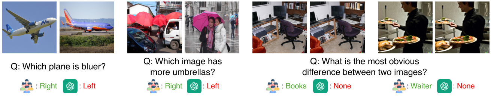
图 3：CompBench 上的错误分析。我们观察到 GPT-4V [1] 表现不足的四种错误类型：（i）区分物体与背景的颜色；（ii）计数细小或远处的物体；（iii）在拥挤场景中识别物体；（iv）识别失焦区域的细节。
| Model | Accuracy |
| GPT-4V | 68.6% |
| Humans | 86.5% |
表 4：在 140 个样本上的初步人类评测。
Error Analysis. We analyze error cases by GPT-4V and offer insights to enhance its performance (Figure 3). First, GPT-4V may not effectively distinguish the color between objects and backgrounds. For instance, in the first example of Figure 3, the object — a plane — shares a similar color (i.e., blue) with the background, causing GPT-4V to fail in selecting the bluer plane. Second, GPT-4V struggles to count accurately for small or distant objects (e.g., people further away wearing umbrellas), as shown in the second example. Third, GPT-4V finds it challenging to identify the target object if numerous items exist within images. In the third example, both images contain multiple objects, such as monitors, laptops, keyboards, desks, and books, and GPT-4V fails to pinpoint the target object (i.e., books). Lastly, GPT-4V may overlook details in out-of-focus areas of images. For instance, in the fourth example, the camera focuses on a pizza, leaving a waiter out of focus. Consequently, GPT-4V fails to detect facial changes in the waiter, highlighting its struggle with details in out-of-focus areas.
错误分析。我们分析了 GPT-4V 的错误样例，并提出改进其表现的思路（图 3）。第一，GPT-4V 可能无法有效区分物体与背景的颜色。例如，在图 3 的第一个例子中，物体（一架飞机）与背景颜色相近（都是蓝色），导致 GPT-4V 未能选出更蓝的那架飞机。第二，GPT-4V 难以准确计数细小或远处的物体（例如远处打着伞的人），如第二个例子所示。第三，当图像中存在大量物品时，GPT-4V 难以定位目标物体。在第三个例子中，两张图像都包含多个物体，如显示器、笔记本电脑、键盘、书桌与书本，而 GPT-4V 未能锁定目标物体（即书本）。最后，GPT-4V 可能忽略图像失焦区域的细节。例如，在第四个例子中，相机对焦在披萨上，使服务员处于失焦状态，结果 GPT-4V 未能察觉服务员的面部变化，凸显了它在失焦区域细节上的困难。
Human evaluation. We investigate how much current MLLMs (e.g., GPT-4V) lag behind human performance. We conduct a preliminary human evaluation using examples randomly sampled from the sixteen tasks (columns) in Table 1. We ask five human evaluators, different from our annotators, to answer these questions and average their performance. As shown in Table 4, the performance of GPT-4V on these examples is approximately 18% below that of humans. This not only highlights the challenge of our CompBench but also underscores the limited capabilities of current MLLMs in multi-image relative comparison.
人类评测。我们考察当前 MLLM（如 GPT-4V）与人类表现之间有多大差距。我们使用从表 1 的十六个任务（列）中随机抽取的 个样例开展初步人类评测。我们请五位不同于标注者的人类评测者回答这些问题，并对他们的表现取平均。如表 4 所示，GPT-4V 在这些样例上的表现比人类低约 18%。这既凸显了 CompBench 的难度，也说明当前 MLLM 在多图像相对比较上的能力有限。
Since our paper submission in early June 2024, several new MLLMs have been released, such as GPT-4o [42] or Gemini1.5-Pro [52]. In Table 5, we present a comparative analysis of GPT-4V with the recently released GPT-4o, alongside Gemini1.0-Pro with Gemini1.5-Pro. These upgraded models demonstrate substantial improvements over their previous versions, with GPT-4o showing marked gains in existence (MB and SD) and spatial (ND) relativities, while Gemini1.5-Pro achieves broader enhancements across multiple relational dimensions. This progress likely results from enhanced training approaches, including scaling model and data along with refined learning strategies. Investigating exactly how these methods drive GPT-4o’s substantial gains on our benchmark could be a valuable direction for future research. Nonetheless, we note that the performance of GPT-4o remains mediocre in several relativities, such as spatiality and quantity.
自 2024 年 6 月初我们投稿以来，若干新的 MLLM 已发布，例如 GPT-4o [42] 与 Gemini1.5-Pro [52]。在表 5 中，我们把 GPT-4V 与新发布的 GPT-4o 对比，并把 Gemini1.0-Pro 与 Gemini1.5-Pro 对比。这些升级模型相比前代有大幅改进：GPT-4o 在存在性（MB 与 SD）与空间性（ND）相对关系上取得显著增益，而 Gemini1.5-Pro 则在多个关系维度上有更广泛的提升。这一进展很可能源于训练方法的改进，包括模型与数据的规模化以及更精细的学习策略。探究这些方法究竟如何驱动 GPT-4o 在我们基准上的大幅增益，是未来研究的一个有价值方向。尽管如此，我们注意到 GPT-4o 在若干相对性上表现仍然平平，例如空间性与数量。
| Model | Attribute | Exist. | State | Emot. | Temp. | Spat. | Quan. | Qual. | Avg | ||||||||
| ST | FA | VA | CU | WF | MB | SD | ST | VA | CE | FE | SN | CC | ND | VQ | QB | ||
| GPT-4V | 91.8 | 89.0 | 76.9 | 71.4 | 72.1 | 58.3 | 41.9 | 92.2 | 87.8 | 91.8 | 83.4 | 71.4 | 73.7 | 56.1 | 63.8 | 73.0 | 74.7 |
| GPT-4o | 92.3 | 97.0 | 86.3 | 74.7 | 84.5 | 81.2 | 67.2 | 95.8 | 89.6 | 96.6 | 91.1 | 72.0 | 83.3 | 68.2 | 67.8 | 81.2 | 83.1 |
| Improvement | 0.5 | 8.0 | 9.4 | 3.3 | 12.4 | 22.9 | 25.3 | 3.6 | 1.8 | 4.8 | 7.7 | 0.6 | 9.6 | 12.1 | 4.0 | 8.2 | 8.4 |
| Gemini1.0-Pro | 71.9 | 76.3 | 69.3 | 59.9 | 54.9 | 53.7 | 53.0 | 81.8 | 70.7 | 60.6 | 71.2 | 55.1 | 58.2 | 56.6 | 54.6 | 59.5 | 63.0 |
| Gemini1.5-Pro | 79.2 | 91.8 | 77.7 | 71.4 | 72.8 | 55.4 | 58.7 | 91.0 | 84.0 | 93.0 | 87.3 | 50.3 | 70.3 | 68.3 | 64.8 | 70.5 | 74.2 |
| Improvement | 7.3 | 15.5 | 8.4 | 11.5 | 17.9 | 1.7 | 5.7 | 9.2 | 13.3 | 32.4 | 16.1 | -4.8 | 12.1 | 11.7 | 10.2 | 11.0 | 11.2 |
表 5：NeurIPS 截止日期之后发布的新 MLLM 模型（GPT-4o 与 Gemini1.5-Pro）的结果。每个任务上表现最好的模型以粗体标示。两个升级后的 MLLM 模型（GPT-4o 与 Gemini1.5-Pro）相比其前代（GPT-4V 与 Gemini1.0-Pro）都有显著提升。
In this work, we introduce MLLM-CompBench, a comprehensive benchmark designed to evaluate comparative reasoning in multimodal LLMs (MLLMs), offering detailed analyses and insights for future advancements. As future work, we plan to incorporate more challenging datasets into each type of relative comparison in MLLM-CompBench. For instance, additional video datasets could be explored for temporal relativity, such as cooking activities [68] or other sports [62, 48]. Moreover, expanding the scope of comparative reasoning relativities holds promise. Examples include similarity comparisons (e.g., “Identify similar objects between the two images.”) and comparisons involving more than two images (e.g., “Given images showing various views of one object along with a few of a different object, the model should identify the outliers.”). We envision that MLLM-CompBench will serve as a valuable tool, paving the way for advancing comparative reasoning in MLLMs.
本文中，我们提出 MLLM-CompBench，一个用于评估多模态大语言模型（MLLM）比较推理能力的综合基准，并给出细致的分析与面向未来发展的洞见。未来工作中，我们计划把更具挑战性的数据集纳入 MLLM-CompBench 的每类相对比较。例如，可为时间相对性探索更多视频数据集，如烹饪活动 [68] 或其他体育项目 [62, 48]。此外，拓展比较推理相对关系的范围也很有前景，例如相似性比较（如「找出两张图像中相似的物体。」）以及涉及两张以上图像的比较（如「给定展示同一物体多个视角的图像以及几张另一物体的图像，模型应识别出异常项。」）。我们期待 MLLM-CompBench 能成为一个有价值的工具，为推进 MLLM 的比较推理铺平道路。
This research is supported in part by grants from the National Science Foundation (IIS-2107077, OAC-2112606, OAC-2118240). We extend our sincere appreciation to our colleagues from the OSU MLB lab—Jinsu Yoo, Ping Zhang, Jiaman Wu, Ziwei Li, and Tai-Yu Pan—for their thoughtful feedback and discussions. Finally, we are grateful for the generous support of computational resources provided by the Ohio Supercomputer Center.
本研究部分由美国国家科学基金会资助（IIS-2107077、OAC-2112606、OAC-2118240）。我们诚挚感谢俄亥俄州立大学 MLB 实验室的同事——Jinsu Yoo、Ping Zhang、Jiaman Wu、Ziwei Li 与 Tai-Yu Pan——提出的宝贵反馈与讨论。最后，我们感谢俄亥俄超级计算机中心提供的慷慨算力支持。
All codes, data, and instructions for our MLLM-CompBench can be found in https://github.com/RaptorMai/CompBench. MLLM-CompBench is released under a Creative Commons Attribution 4.0 License (CC BY 4.0).
我们 MLLM-CompBench 的全部代码、数据与说明可在 https://github.com/RaptorMai/CompBench 获取。MLLM-CompBench 以知识共享署名 4.0 许可协议（CC BY 4.0）发布。
Our supplementary materials are summarized as follows:
我们的补充材料概述如下：
Appendix A: Limitations, social impacts, ethical considerations, and license of assets.
• 附录 A：局限性、社会影响、伦理考量与资产许可。
Appendix B: MLLM-CompBench curation and model evaluation (cf. §4.2 and §5.1 in the main text).
• 附录 B：MLLM-CompBench 的构建与模型评测（参见正文 §4.2 与 §5.1）。
Appendix C: Training details on LLaVA-1.6 (cf. §5.3 in the main text).
• 附录 C：LLaVA-1.6 的训练细节（参见正文 §5.3）。
Appendix D: More qualitative examples.
• 附录 D：更多定性示例。
While we conducted a human evaluation study to establish the upper bound performance on MLLM-CompBench, the study is currently limited to 140 samples assessed by five evaluators (cf. §5.3 in the main text). We plan to expand the study to a larger scale in future work.
尽管我们开展了一项人类评测研究来确定 MLLM-CompBench 上的性能上界，该研究目前仅限于由五位评测者评估的 140 个样本（参见正文 §5.3）。我们计划在未来工作中把该研究扩展到更大规模。
MLLM-CompBench evaluates the comparative reasoning abilities of MLLMs in images. A potential negative impact of our work is that malicious users might exploit our concept (i.e., comparison) to compare ethical or offensive content. Therefore, it is essential to incorporate effective safeguards in MLLMs to filter out any inappropriate materials.
MLLM-CompBench 评估 MLLM 在图像上的比较推理能力。我们工作的一个潜在负面影响是，恶意用户可能利用我们的概念（即比较）去比较涉及伦理或攻击性的内容。因此，有必要在 MLLM 中纳入有效的防护措施，以过滤任何不当材料。
All fourteen datasets (cf. Table 1 in the main text) that we used to curate MLLM-CompBench adhere to strict guidelines to exclude any harmful, unethical, or offensive content. Additionally, we instruct human annotators to avoid generating any personally identifiable information or offensive content during our annotation process. Finally, we do not conduct any study to compare harmful, ethical, or offensive content between the two images.
我们用于构建 MLLM-CompBench 的全部十四个数据集（参见正文表 1）都遵循严格的准则，剔除任何有害、不道德或攻击性的内容。此外，我们要求人类标注者在标注过程中避免产生任何个人身份信息或攻击性内容。最后，我们没有开展任何比较两张图像中有害、涉及伦理或攻击性内容的研究。
All fourteen datasets are publicly available, and Table 6 details the licensing information for the assets in each dataset. We release our MLLM-CompBench under a Creative Commons Attribution 4.0 License (CC BY 4.0) to enhance global accessibility and foster innovation and collaboration in research.
全部十四个数据集均为公开可用，表 6 详列了各数据集中资产的许可信息。我们以知识共享署名 4.0 许可协议（CC BY 4.0）发布 MLLM-CompBench，以提升全球可及性，并促进研究中的创新与合作。
| Public | License |
| Dataset | |
| MIT-States [24] | N/A |
| Fashionpedia [26] | CC BY 4.0 |
| VAW [47] | Adobe Research License |
| CUB-200-2011 [60] | CC BY |
| Wildfish++ [70] | N/A |
| MagicBrush [66] | CC BY 4.0 |
| Spot-the-diff [25] | N/A |
| CelebA [35] | Research-only, non-commercial |
| FER-2013 [20] | N/A |
| SoccerNet [19] | MIT License |
| CompCars [64] | Research-only, non-commercial |
| NYU-Depth V2 [55] | N/A |
| VQAv2 [21] | CC BY 4.0 |
| Q-Bench2 [67] | N/A |
表 6：资产许可。
We create UI interfaces for annotation using Python in Jupyter Notebook and store the annotations in JSON files. In the following sections, we provide detailed descriptions of the annotation process for each dataset, which are omitted in the main text.
我们使用 Python 在 Jupyter Notebook 中构建标注 UI 界面，并把标注存储为 JSON 文件。下面各小节给出正文中省略的各数据集标注流程的详细说明。
MagicBrush [66] is a large-scale, manually annotated dataset for instruction-guided real image editing. For each image, MagicBrush utilizes DALL-E 2 [51] to generate an edited version of the image based on language instructions, such as “let the flowers in the vase be blue.” Our goal is to identify pairs of similar images. We thus use CLIP [49] to evaluate the visual similarity between the original and edited images. Only pairs exceeding a predetermined similarity threshold are selected as candidate samples for our MLLM-CompBench. For each selected pair, we then construct a multiple-choice question to ask the difference between two images in the pairs. Concretely, we first use GPT-4V [1] to extract all relevant objects and their attributes from the edited image with the following prompt:
MagicBrush [66] 是一个大规模、人工标注的指令引导真实图像编辑数据集。对于每张图像，MagicBrush 使用 DALL-E 2 [51] 依据语言指令（如「让花瓶里的花变成蓝色」）生成编辑后的版本。我们的目标是找出相似的图像对，因此使用 CLIP [49] 评估原图与编辑后图像之间的视觉相似度，只有超过预设相似度阈值的图像对才被选作 MLLM-CompBench 的候选样本。对于每个被选中的图像对，我们再构造一道多项选择题，询问两张图像之间的差异。具体地，我们首先用 GPT-4V [1] 通过以下提示从编辑后的图像中抽取所有相关物体及其属性：
“Please extract as many components as possible from the provided images. The following examples illustrate some potential components, but the list is not exhaustive. Only provide the component names, separated by commas. If a human or an animal is shown in the images and features such as hair, eyes, hands, mouth, ears, and legs are visible, ensure to include them. Similarly, try to identify all components in as much detail as possible.
Examples of components: leg, eye, ear, food, pillow, flower, plate, window, door, chair, dining table, sofa, banana, bowl, sugar, blender, berry, lizard, watermelon, motorcycle, apple, curtain, cookies, cake, hair, hat, dresses, bacon, butter, jam, bread, surfboard, t-shirt, pants, hands, fridge, plants, cabinet, sink, car, girl, boy.”
「请尽可能多地从提供的图像中抽取组成部分。下面的示例列举了一些可能的组成部分，但该列表并非穷尽。只提供组成部分的名称，以逗号分隔。如果图像中出现了人或动物，且头发、眼睛、手、嘴、耳朵、腿等特征可见，请确保将其包含在内。同样，请尽可能细致地识别所有组成部分。组成部分示例：腿、眼睛、耳朵、食物、枕头、花、盘子、窗户、门、椅子、餐桌、沙发、香蕉、碗、糖、搅拌机、浆果、蜥蜴、西瓜、摩托车、苹果、窗帘、饼干、蛋糕、头发、帽子、连衣裙、培根、黄油、果酱、面包、冲浪板、T 恤、裤子、手、冰箱、植物、橱柜、水槽、汽车、女孩、男孩。」
We treat objects and their attributes (if found) as options for the questions. However, GPT-4V [1] may not capture all relevant objects (options) in the images. We thus request human annotators to add as many relevant options as possible. Finally, annotators are required to select the obvious difference between two images as the correct answer among options and verify the quality of the generated samples (Figure 4).
我们把物体及其属性（若找到）作为问题的选项。然而 GPT-4V [1] 可能未能捕捉图像中所有相关物体（选项），因此我们请人类标注者尽可能补充相关选项。最后，标注者需要从选项中选出两张图像之间的明显差异作为正确答案，并核验所生成样本的质量（图 4）。
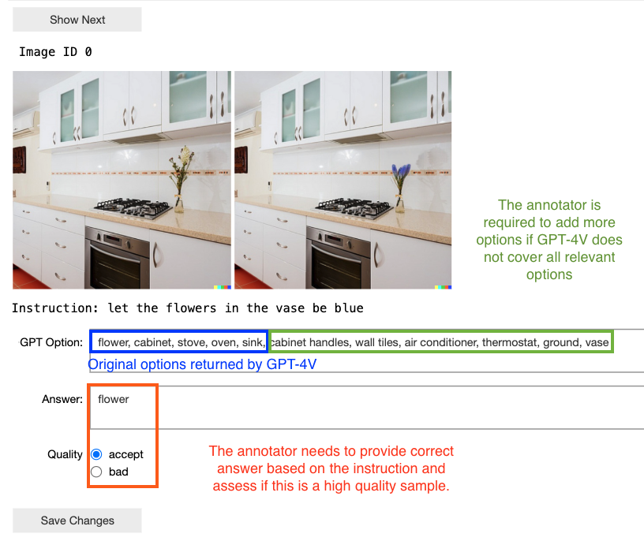
图 4：MagicBrush 的标注界面。
Spot-the-diff [25] offers video-surveillance image pairs from outdoor scenes, along with descriptions and pixel-level masks of their differences. Similar to MagicBrush, we aim to construct a multiple-choice question to find the obvious difference between the two images. We first prompt the text-only GPT-4 to extract the potentially correct objects from the descriptions of the differences using the following prompt:
Spot-the-diff [25] 提供来自户外场景的视频监控图像对，以及差异的描述与像素级掩码。与 MagicBrush 类似，我们的目标是构造一道多项选择题，找出两张图像之间的明显差异。我们首先用以下提示让纯文本的 GPT-4 从差异描述中抽取可能正确的物体：
“These sentences describe the differences between the two images. Extract the objects from these sentences. for example, [“there are more people”, “the car moved”], you should return “people, car”. Please only provide the answer without any explanation and separate the answer names by commas.”
「这些句子描述了两张图像之间的差异。请从这些句子中抽取物体。例如，[“人更多了”、“汽车移动了”]，你应返回“人, 汽车”。请只给出答案，不要任何解释，答案名称之间以逗号分隔。」
Given the extracted objects and the images, GPT-4V is tasked with finding relevant options in the images based on the following prompt:
给定抽取出的物体与图像后，GPT-4V 需根据以下提示在图像中寻找相关选项：
“Please list all the objects and attributes associated with the image, for example, black cars, people, trees, white trucks, and yellow poles. Only provide one attribute (adjective) per object. Please only provide the answer without any explanation and separate the answer names with commas. Ensure to include these objects: [OBJECTS FROM LAST STEP]”
「请列出与图像相关的所有物体及属性，例如黑色的车、人、树、白色卡车、黄色杆子。每个物体只提供一个属性（形容词）。请只给出答案，不要任何解释，答案名称之间以逗号分隔。请确保包含以下物体：[上一步得到的物体]」
We then instruct human annotators to include additional options (if necessary) and identify the most evident difference between two images from the available options as the correct answer (Figure 5).
随后我们指示人类标注者在必要时补充选项，并从可用选项中找出两张图像之间最明显的差异作为正确答案（图 5）。
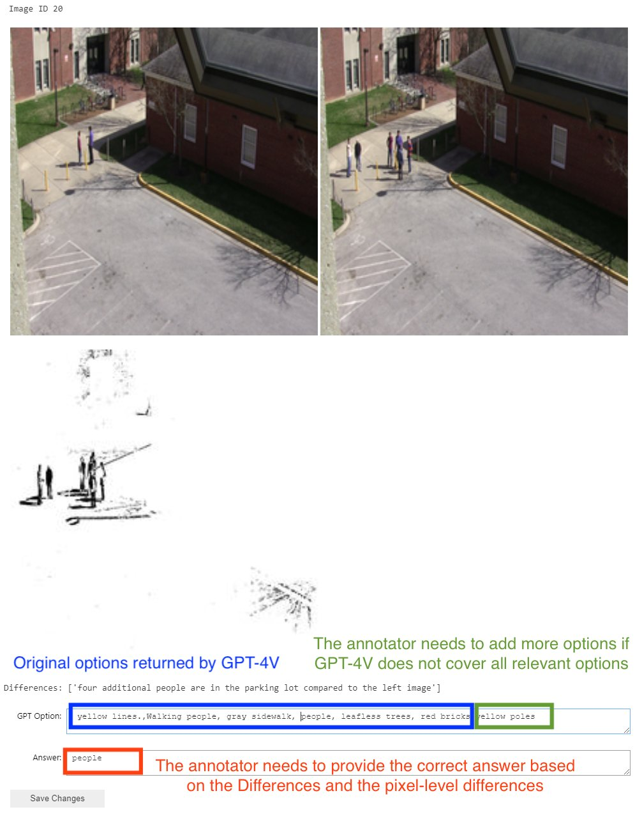
图 5：Spot-the-diff 的标注界面。
MIT-States [24] includes 245 objects with 115 visual attributes or states from online sources such as food or device websites. Each folder in this dataset is named by (adjective, noun), e.g., tall tree, where the adjective describes the state or the attributes and the noun is the object. All the images in this folder share the same adjective and noun. We apply rule-based approaches to generate questions about relative degrees of attributes or states between objects (e.g., “Which tree is taller?”). We then present the questions with the corresponding images in this folder to annotators. The annotators are tasked to select pairs from all the images, label the correct answers (binary: left/right), and filter out any irrelevant or nonsensical questions about the images. In addition, the annotators are required to determine the attribute or state types by selecting from the following options: Size, Color, Texture, Shape, Pattern, State, or None. We filter out examples where the type or answer is None. The annotation UI interface is shown in Figure 6.
MIT-States [24] 包含 245 个物体与 115 种视觉属性或状态，素材来自食品或设备网站等在线来源。该数据集中的每个文件夹以（形容词，名词）命名，例如 tall tree（高树），其中形容词描述状态或属性，名词是物体。该文件夹中的全部图像共享相同的形容词与名词。我们采用基于规则的方法生成关于物体之间属性或状态相对程度的问题（如「哪棵树更高？」）。随后我们把问题与该文件夹中的相应图像一起呈现给标注者。标注者需要从全部图像中选出配对，标注正确答案（二值：左／右），并过滤掉与图像无关或语义不通的问题。此外，标注者还需从以下选项中判定属性或状态的类型：尺寸、颜色、纹理、形状、图案、状态或无。我们剔除类型或答案为「无」的样例。标注 UI 界面如图 6 所示。
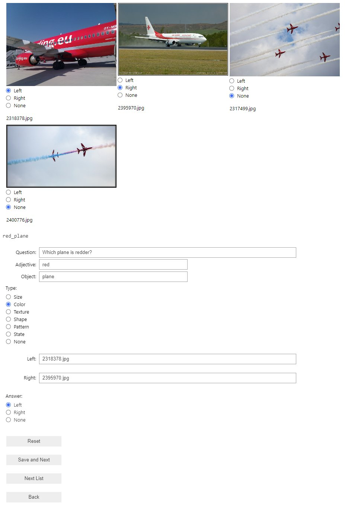
图 6：MIT-States 与 VAW 的标注界面。
VAW [47] provides a large-scale collection of 620 unique attributes, including color, shape, and texture. We process VAW in the same manner as MIT-States, as detailed in Figure 6.
VAW [47] 提供 620 种独特属性的大规模集合，包括颜色、形状与纹理。我们按图 6 所述，以与 MIT-States 相同的方式处理 VAW。
CUB-200-2011 [60] catalogs 15 bird parts and their attributes (e.g., “notched tail”). We group images by species with the same attributes (e.g., “curved bill”) and extract visually similar image pairs from each group. We then prompt GPT-4 to transform visual attributes into questions that compare them using the following in-context prompt:
CUB-200-2011 [60] 编录了 15 个鸟类部位及其属性（如「凹尾」）。我们按具有相同属性的物种（如「弯曲的喙」）对图像分组，并从每组中抽取视觉上相似的图像对。随后我们用以下上下文提示让 GPT-4 把视觉属性转换为比较这些属性的问题：
“I want to turn some text describing the attributes of birds into a question comparing these attributes between birds in two different images. Here are some examples: Attribute: has_bill_shape::hooked, Questions: Which bird has a more hooked bill? Attribute: has_crown_color::brown, Questions: Which bird has more brown on its crown?
Please turn this list of attributes into these questions in this format or style. I want a dictionary format output. [ATTRIBUTE LIST]”
「我想把一些描述鸟类属性的文本，转成一个比较两张不同图像中鸟类这些属性的问题。示例如下：属性：has_bill_shape::hooked（钩状喙形），问题：哪只鸟的喙更呈钩状？属性：has_crown_color::brown（棕色头顶），问题：哪只鸟头顶的棕色更多？请把下面这份属性列表按这种格式或风格转换成这类问题。我希望输出为字典格式。[属性列表]」
The annotators receive all images in each group along with corresponding comparative questions generated by GPT-4. They are asked to select the pairs from the images and label the correct answers (binary: left/right). The annotation interface is shown in Figure 7.
标注者收到每组中的全部图像以及 GPT-4 生成的相应比较问题。他们被要求从图像中选出配对，并标注正确答案（二值：左／右）。标注界面如图 7 所示。
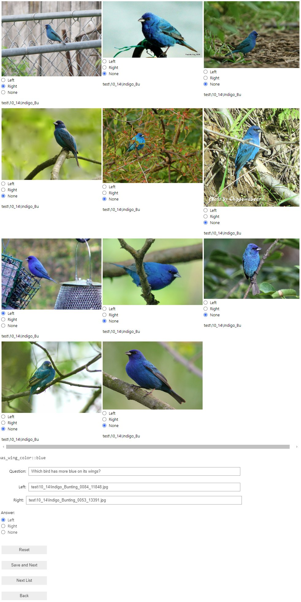
图 7：CUB-200-2011 的标注界面。
Wildfish++ [70] details 22 characteristics (e.g., “brown pelvic fins”) of various fish species and provides detailed descriptions of the differences between two visually similar species. Using the characteristics and the descriptions of difference, we first ask annotators to generate comparative questions (e.g., “Which fish has lighter brown pelvic fins?”). Subsequently, we pass all images from the two similar species along with the corresponding question to the annotators. They select one image from each group to form a pair and label the correct answers as either left or right (Figure 8).
Wildfish++ [70] 详述了各种鱼类的 22 项特征（如「棕色腹鳍」），并提供两个视觉上相似物种之间差异的详细描述。利用这些特征与差异描述，我们首先请标注者生成比较性问题（如「哪条鱼的棕色腹鳍更浅？」）。随后，我们把来自两个相似物种的全部图像连同相应问题交给标注者。他们从每组中各选一张图像组成一对，并把正确答案标注为左或右（图 8）。
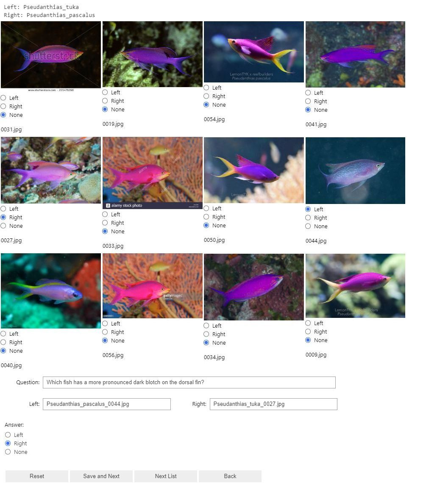
图 8：Wildfish++ 的标注界面。
Fashionpedia [26] is tailored to clothing and accessories and contains 27 types of apparel along with 294 detailed attributes. We group images by (attribute, type), e.g., square neckline. We apply rule-based approaches to generate questions about relative degrees of attributes (e.g., “Which neckline is more square?”) for each group. We then present images of the same type with different attributes, such as “square neckline” and “oval neckline” to the annotators. The annotators are required to select one image from each group to form a pair, choose one between questions from two attributes, and label the correct answer (binary: left/right). The annotation UI interface is shown in Figure 9.
Fashionpedia [26] 面向服装与配饰，包含 27 类服饰与 294 项细致属性。我们按（属性，类型）对图像分组，例如方领。我们采用基于规则的方法，为每组生成关于属性相对程度的问题（如「哪个领口更方？」）。随后我们把同一类型、属性不同的图像（如「方领」与「椭圆领」）呈现给标注者。标注者需要从每组中各选一张图像组成一对，在两个属性对应的问题中选择其一，并标注正确答案（二值：左／右）。标注 UI 界面如图 9 所示。
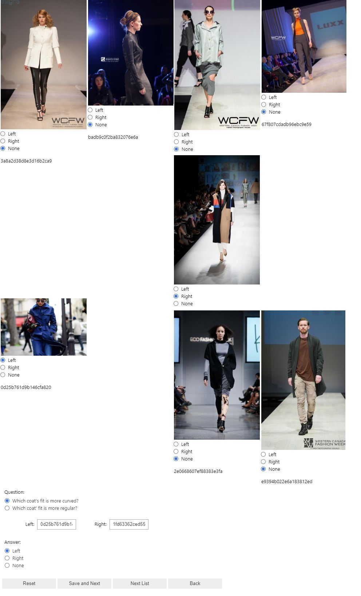
图 9：Fashionpedia 的标注界面。
NYU-Depth V2 [55] features indoor scenes with object segments and depths. Using the segmentation maps, we identify objects within each image and group images containing the same objects. We apply rule-based approaches to generate questions about spatial relative comparisons (e.g., “Which [OBJECT] is closer to the camera?”). The annotator needs to select pairs from all the images in the same group and label the correct answers either left or right (Figure 10).
NYU-Depth V2 [55] 包含带物体分割与深度的室内场景。借助分割图，我们识别每张图像中的物体，并把包含相同物体的图像归为一组。我们采用基于规则的方法生成关于空间相对比较的问题（如「哪个[物体]离相机更近？」）。标注者需要从同一组的全部图像中选出配对，并把正确答案标注为左或右（图 10）。
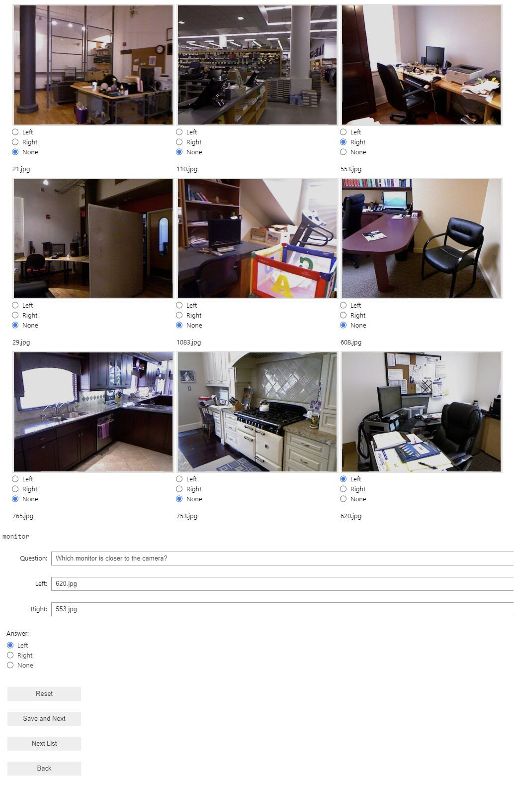
图 10：NYU-Depth V2 的标注界面。
CelebA [35] is a large-scale facial attributes dataset featuring over 200K celebrity images, each annotated with 40 attributes. We focus on images labeled with the “smiling” attribute, as it is the only attribute related to the emotion in the dataset. We generate a comparative question such as “Which person smiles more?”. The annotators are tasked with selecting pairs from all images with the smiling attribute and labeling the correct answers either left or right (Figure 11).
CelebA [35] 是一个大规模人脸属性数据集，包含超过 200K 张名人图像，每张标注了 40 项属性。我们聚焦于带「微笑」属性的图像，因为它是该数据集中唯一与情绪相关的属性。我们生成比较性问题，如「哪个人笑得更多？」。标注者需要从所有带微笑属性的图像中选出配对，并把正确答案标注为左或右（图 11）。
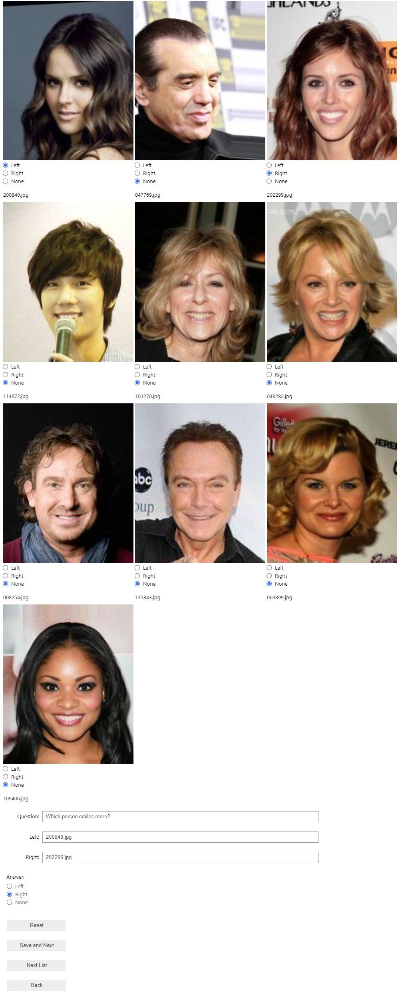
图 11：CelebA 的标注界面。
FER-2013 [20] contains grayscale images along with categories describing the emotion of the person, including Angry, Disgust, Fear, Happy, Sad, Surprise, and Neutral. We leverage rule-based approaches to generate questions about relative emotional comparisons (e.g., “Which person looks more [EMOTIONAL ADJECTIVE]?”). The annotators are required to select pairs from images that share the same emotional attribute and determine the correct answers as either left or right (Figure 12).
FER-2013 [20] 包含灰度图像以及描述人物情绪的类别，包括愤怒、厌恶、恐惧、快乐、悲伤、惊讶与中性。我们利用基于规则的方法生成关于相对情绪比较的问题（如「哪个人看起来更[情绪形容词]？」）。标注者需要从具有相同情绪属性的图像中选出配对，并把正确答案判定为左或右（图 12）。
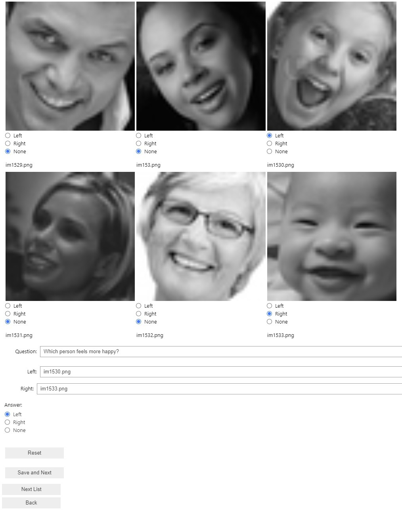
图 12：FER-2013 的标注界面。
SoccerNet [19], CompCars [64], VQAv2 [21], Q-bench2 [67] are automatically processed to generate samples for MLLM-CompBench using their metadata and CLIP visual similarity. For more details, please refer to §4.2 of the main text.
SoccerNet [19]、CompCars [64]、VQAv2 [21]、Q-bench2 [67] 通过其元数据与 CLIP 视觉相似度自动处理，生成 MLLM-CompBench 的样本。更多细节请参见正文 §4.2。
Table 7 summarizes our language prompts for evaluating MLLMs. We observe that in the case of SoccerNet [19], Gemini1.0-pro [58] always predicts the answer “Left” for binary questions (e.g., “These are two frames related to [SOCCER_ACTION] in a soccer match. Which frame happens first? Please only return one option from (Left, Right) without any other words.”). We thus prompted the Gemini to answer open-ended questions (as shown in Table 7) instead. We then task human evaluators with verifying whether its responses (i.e., textual descriptions) match the ground-truth answers to calculate its performance. For a fair comparison, we apply the same open-ended questions to other models (i.e., GPT-4V [1], LLaVA-1.6 [33], VILA-1.5 [32]) and report their accuracies.
表 7 汇总了我们用于评测 MLLM 的语言提示。我们观察到，在 SoccerNet [19] 的情形下，Gemini1.0-pro [58] 对二值问题（如「这是与一场足球比赛中[足球动作]相关的两帧。哪一帧发生得更早？请只从（左、右）中返回一个选项，不要其他任何文字。」）总是预测「左」。因此，我们改为提示 Gemini 回答开放式问题（如表 7 所示）。随后我们让人类评测者核验其回答（即文本描述）是否与真值答案匹配，以此计算其表现。为保证公平比较，我们对其他模型（即 GPT-4V [1]、LLaVA-1.6 [33]、VILA-1.5 [32]）使用同样的开放式问题，并报告其准确率。
| Dataset | Model | Lagnauge Prompt |
| GPT-4V | “[QUESTION] If you choose the first image, return Left, and if you choose the second image, return Right. Please only return either Left or Right without any other words, spaces, or punctuation.” | |
| ST, FA, VA, CU, | LLaVA-1.6 | |
| WF, CE, FE, ND | VILA-1.5 | |
| Gemini1.0-pro | “[QUESTION] If you choose the first image, return First, and if you choose the second image, return Second. Please only return either First or Second without any other words, spaces, or punctuation.” | |
| MB, SD | GPT-4V | “What is the most obvious difference between the two images? Choose from the following options. If there is no obvious difference, choose None. Options: None, [OPTIONS]. Please only return one of the options without any other words. ” |
| LLaVA-1.6 | ||
| VILA-1.5 | ||
| Gemini1.0-pro | ||
| SN | GPT-4V | “These are two frames related to [SOCCER_ACTION] in a soccer match. Which frame happens first?” |
| LLaVA-1.6 | ||
| VILA-1.5 | ||
| Gemini1.0-pro | ||
| CC | GPT-4V | “Based on these images, which car is newer in terms of its model year or release year? Note that this question refers solely to the year each car |
| LLaVA-1.6 | was first introduced or manufactured, not its current condition or usage. If you choose the first image, return Left, and if you choose the second | |
| VILA-1.5 | image, return Right. Please only return either Left or Right without any other words, spaces, or punctuation.” | |
| Gemini1.0-pro | Based on these images, which car is newer in terms of its model year or release year? Note that this question refers solely to the year each car was first introduced or manufactured, not its current condition or usage. If you choose the first image, return First, and if you choose the second image, return Second. Please only return either First or Second without any other words, spaces, or punctuation.” | |
| VQ | GPT-4V | “[QUESTION] If the second image has more, return Right. If the first image has more, return Left. If both images have the same number, return Same. Please only return either Left or Right or Same without any other words, spaces, or punctuation.” |
| LLaVA-1.6 | ||
| VILA-1.5 | ||
| Gemini1.0-pro | ||
| QB | GPT-4V | “[QUESTION] Options: [OPTIONS]” |
| LLaVA-1.6 | ||
| VILA-1.5 | ||
| Gemini1.0-pro |
表 7：用于评测 MLLM 的语言提示。ST：MIT-States [24]，FA：Fashionpedia [26]，VA：VAW [47]，CU：CUB-200-2011 [60]，WF：Wildfish++ [70]，MB：MagicBrush [66]，SD：Spot-the-diff [25]，CE：CelebA [35]，FE：FER-2013 [20]，SN：SoccerNet [19]，CC：CompCars [64]，ND：NYU-Depth V2 [55]，VQ：VQAv2 [21]，QB：Q-Bench2 [67]。
We use official APIs to evaluate proprietary MLLMs, GPT-4V [1] and Gemini [58]. For GPT-4V, we use the version of gpt-4-turbo33 3 https://platform.openai.com/docs/models/gpt-4-turbo-and-gpt-4. For Gemini, we use the Gemini1.0 Pro Vision44 4 https://ai.google.dev/gemini-api/docs/models/gemini#gemini-1.0-pro-vision. For open source models such as LLaVa-1.6-34b [33]55 5 https://github.com/haotian-liu/LLaVA and VILA-1.5-40b [32]66 6 https://github.com/Efficient-Large-Model/VILA, we utilize their official source codes and conduct inference on NVIDIA RTX 6000 Ada GPUs.
我们使用官方 API 评测专有 MLLM：GPT-4V [1] 与 Gemini [58]。对于 GPT-4V，我们使用 gpt-4-turbo 版本（脚注 3：https://platform.openai.com/docs/models/gpt-4-turbo-and-gpt-4）。对于 Gemini，我们使用 Gemini1.0 Pro Vision（脚注 4：https://ai.google.dev/gemini-api/docs/models/gemini#gemini-1.0-pro-vision）。对于 LLaVa-1.6-34b [33]（脚注 5：https://github.com/haotian-liu/LLaVA）与 VILA-1.5-40b [32]（脚注 6：https://github.com/Efficient-Large-Model/VILA）等开源模型，我们使用其官方源代码，并在 NVIDIA RTX 6000 Ada GPU 上进行推理。
As discussed in §5.3 of the main text, we conduct a study to evaluate whether fine-tuning enhances the comparative capabilities of MLLMs. Concretely, we focus on two relativities: Temporality and Quantity. For temporality, we construct a total of 20.6K training examples from SoccerNet [19], following the similar data collection and annotation protocol described in §4.2.5 of the main text. For quantity, we curate a total training set of 20.9K samples from VQAv2 [21], based on the similar data collection and annotation pipeline in §4.2.7 of the main text. We fine-tune LLaVA-1.6-34b [33] on each of these training datasets separately, using LoRA techniques. We follow similar hyperparameter settings as those provided in the official LLaVA source codes. For instance, batch size/the number of epochs/learning rate are 16/3/2e-5, respectively. See the training script in our GitHub repository for the complete configuration. All models are fine-tuned on four NVIDIA RTX 6000 Ada GPUs.
正如正文 §5.3 所述，我们开展了一项研究，评估微调能否增强 MLLM 的比较能力。具体地，我们聚焦两类相对性：时间性与数量。对于时间性，我们按正文 §4.2.5 描述的相似数据采集与标注流程，从 SoccerNet [19] 构建了 20.6K 条训练样例。对于数量，我们按正文 §4.2.7 的相似数据采集与标注流程，从 VQAv2 [21] 编排了 20.9K 条训练样本。我们使用 LoRA 技术，在这些训练数据集上分别微调 LLaVA-1.6-34b [33]。我们沿用官方 LLaVA 源代码中相似的超参数设置，例如批大小／训练轮数／学习率分别为 16／3／2e-5。完整配置请见我们 GitHub 仓库中的训练脚本。所有模型均在四块 NVIDIA RTX 6000 Ada GPU 上微调。
In addition to the main text, we show more qualitative examples from each of fourteen datasets in Figure 13, Figure 14, Figure 15, Figure 16, and Figure 17. We observe that GPT-4V, one of the leading MLLMs, often faces challenges across a range of relative comparison tasks.
除正文外，我们在图 13、图 14、图 15、图 16 与图 17 中展示了来自十四个数据集的更多定性示例。我们观察到，作为领先 MLLM 之一的 GPT-4V 在一系列相对比较任务上常常面临挑战。
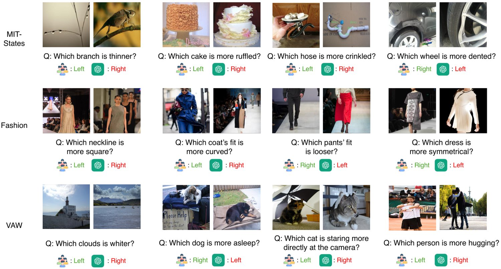
图 13：MIT-States [24]、Fashionpedia [26] 与 VAW [47] 上的定性示例。
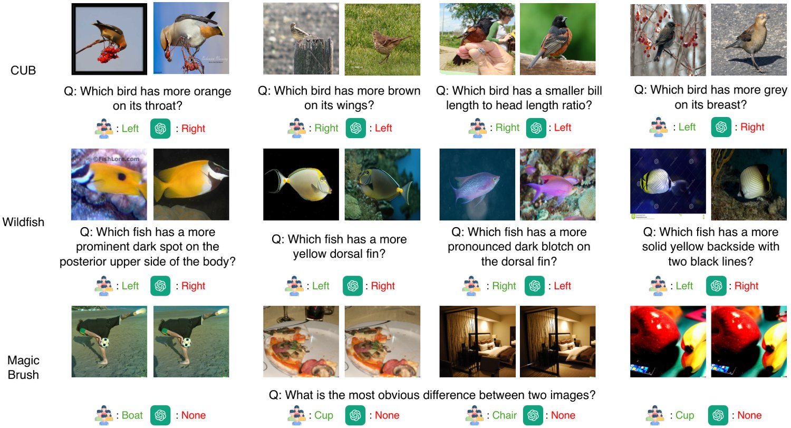
图 14：CUB-200-2011 [60]、Wildfish++ [70] 与 MagicBrush [66] 上的定性示例。
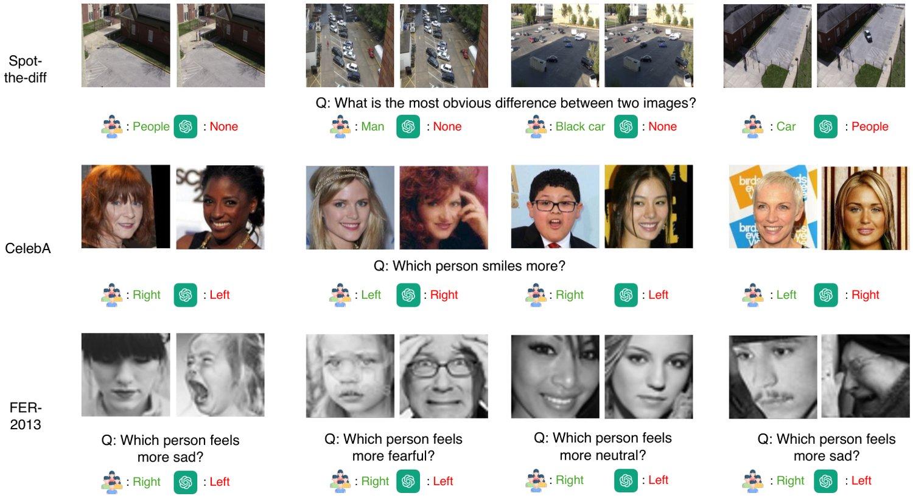
图 15：Spot-the-diff [25]、CelebA [35] 与 FER-2013 [20] 上的定性示例。
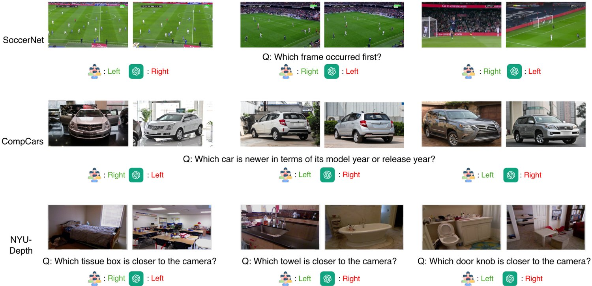
图 16：SoccerNet [19]、CompCars [64] 与 NYU-Depth V2 [55] 上的定性示例。
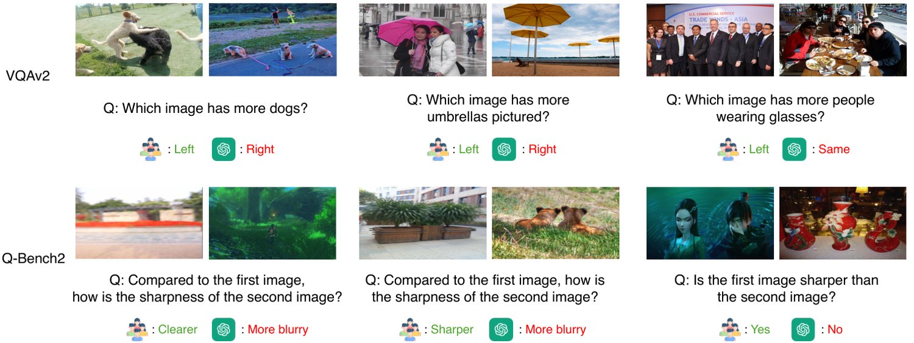
图 17：VQAv2 [21] 与 Q-Bench2 [67] 上的定性示例。
For all authors…
Do the main claims made in the abstract and introduction accurately reflect the paper’s contributions and scope? [Yes]
Did you describe the limitations of your work? [Yes] See discussions in Suppl.
Did you discuss any potential negative societal impacts of your work? [Yes] See discussions in Suppl.
Have you read the ethics review guidelines and ensured that your paper conforms to them? [Yes]
1. 对所有作者而言……（a）摘要与引言中的主要论断是否准确反映论文的贡献与范围？[是]（b）你是否描述了工作的局限性？[是] 见补充材料中的讨论。（c）你是否讨论了工作潜在的负面社会影响？[是] 见补充材料中的讨论。（d）你是否阅读了伦理审查指南并确保论文符合？[是]
If you are including theoretical results…
Did you state the full set of assumptions of all theoretical results? [N/A]
Did you include complete proofs of all theoretical results? [N/A]
2. 若包含理论结果……（a）你是否陈述了所有理论结果的完整假设集？[不适用]（b）你是否给出了所有理论结果的完整证明？[不适用]
If you ran experiments (e.g. for benchmarks)…
Did you include the code, data, and instructions needed to reproduce the main experimental results (either in the supplemental material or as a URL)? [Yes] See details in Suppl.
Did you specify all the training details (e.g., data splits, hyperparameters, how they were chosen)? [Yes] See details in Suppl.
Did you report error bars (e.g., with respect to the random seed after running experiments multiple times)? [No] Most of our experiments are evaluating existing MLLM models.
Did you include the total amount of compute and the type of resources used (e.g., type of GPUs, internal cluster, or cloud provider)? [Yes] See details in Suppl.
3. 若你开展了实验（例如基准评测）……（a）你是否提供了复现主要实验结果所需的代码、数据与说明（在补充材料或 URL 中）？[是] 见补充材料中的细节。（b）你是否说明了全部训练细节（如数据划分、超参数及其选择方式）？[是] 见补充材料中的细节。（c）你是否报告了误差范围（例如多次运行实验后关于随机种子的）？[否] 我们的实验大多是评测现有 MLLM 模型。（d）你是否说明了所用算力的总量与资源类型（如 GPU 型号、内部集群或云服务商）？[是] 见补充材料中的细节。
If you are using existing assets (e.g., code, data, models) or curating/releasing new assets…
If your work uses existing assets, did you cite the creators? [Yes]
Did you mention the license of the assets? [Yes] See details in Suppl.
Did you include any new assets either in the supplemental material or as a URL? [Yes] We curated new annotations.
Did you discuss whether and how consent was obtained from people whose data you’re using/curating? [Yes] See discussions in Suppl.
Did you discuss whether the data you are using/curating contains personally identifiable information or offensive content? [Yes] See discussions in Suppl.
4. 若你使用了现有资产（如代码、数据、模型）或整理／发布了新资产……（a）你的工作若使用了现有资产，是否引用了创建者？[是]（b）你是否提及了资产的许可？[是] 见补充材料中的细节。（c）你是否在补充材料或 URL 中提供了新资产？[是] 我们整理了新的标注。（d）你是否讨论了是否以及如何获得数据所涉人员的同意？[是] 见补充材料中的讨论。（e）你是否讨论了所使用／整理的数据是否包含个人身份信息或攻击性内容？[是] 见补充材料中的讨论。
If you used crowdsourcing or conducted research with human subjects…
Did you include the full text of instructions given to participants and screenshots, if applicable? [N/A]
Did you describe any potential participant risks, with links to Institutional Review Board (IRB) approvals, if applicable? [N/A]
Did you include the estimated hourly wage paid to participants and the total amount spent on participant compensation? [N/A]
5. 若你使用了众包或开展了涉及人类受试者的研究……（a）你是否提供了给参与者的完整指示文本与截图（如适用）？[不适用]（b）你是否描述了参与者的潜在风险，并附上机构审查委员会（IRB）批准的链接（如适用）？[不适用]（c）你是否说明了支付给参与者的估计时薪与参与者报酬总额？[不适用]